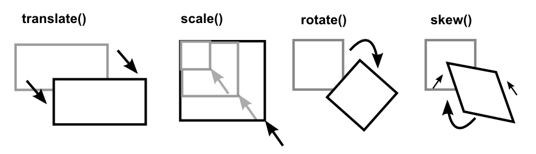

Transformaciones 2D
En este capítulo aprenderá acerca de los siguientes métodos de transformación 2D:
- El translate() mueve un elemento desde su posición actual según los valores del eje X e Y.
- El rotate() rota un elemento en sentido horario o antihorario según los grados indicados.
- scale() aumenta o disminuye el tamaño de un elemento según los parámetros de anchura y altura.
- El skewX() deforma un elemento a lo largo del eje X.
- El skewY() deforma un elemento a lo largo del eje Y.
- El skew() deforma un elemento en ambos ejes.
- El matrix() combina todas las transformaciones 2D en una sola función.

translate
rotate
scale
skewX
skewY
skew
matrix
 Lenguaje CSS3
Lenguaje CSS3